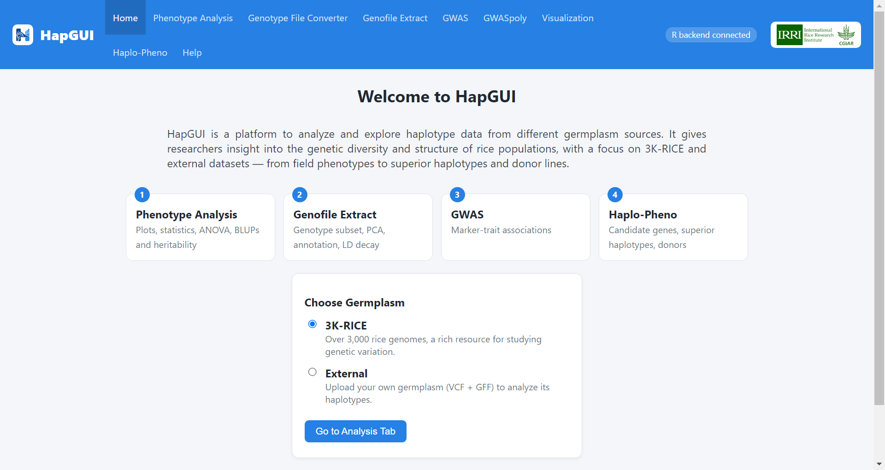
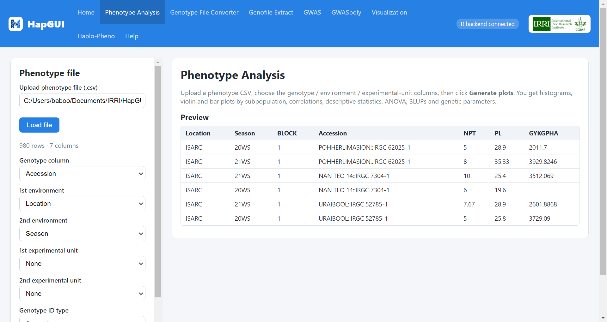
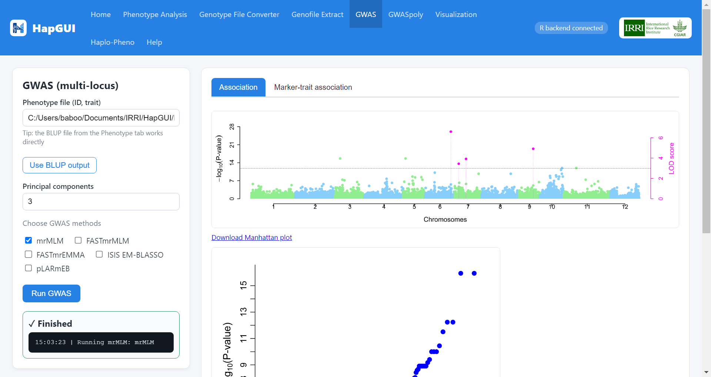
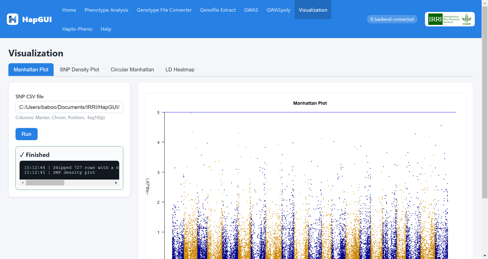
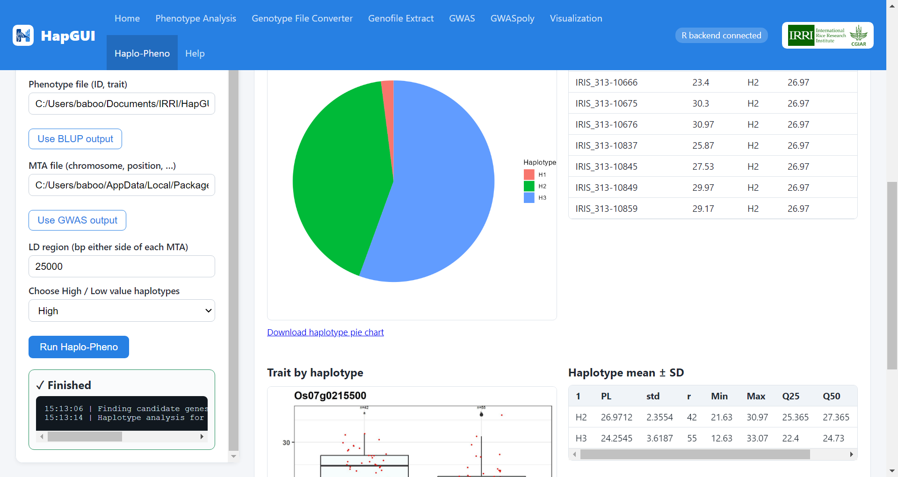

HapGUI Desktop
Phenotype analysis, GWAS and haplotype–phenotype analysis for rice in one Windows app. Everything it needs is inside the installer, so there is nothing else to set up.
Download for Windows Portable version (.zip)
Demo files and input examples (.zip, 12 MB)

What it does
Works offline on your computer. Your data never leaves it.
Phenotype analysis
Plots, descriptive statistics, ANOVA, correlation, BLUPs and genetic parameters (heritability, GCV, PCV, genetic advance).
Genofile extract and converter
Subset the built-in 3K-RICE data or your own VCF (diploid or polyploid) to your lines, with PCA, LD decay and gene annotation. An ID mapping file reconciles different sample names.
GWAS (mrMLM)
Multi-locus GWAS on your extracted genotypes, with Manhattan and QQ plots and a significant-marker table.
GWASpoly
Association analysis for polyploid data, with ploidy filled in from the extraction.
Visualization
Manhattan, QQ and circular plots for your results.
Haplo-Pheno
Candidate genes, haplotypes and superior-haplotype tables for a locus, with downloadable results.




Install
- Download HapGUI-…-Setup.exe with the button above.
- Run it and choose Only for me. No administrator rights are needed.
- Open HapGUI from the Start menu.
Requirements
| Operating system | Windows 10 or 11, 64-bit |
| Memory | 8 GB RAM recommended. Large VCF files need more, so close other programs while extracting. |
| Disk space | About 3 GB, plus room for your results. |
| Inside the app | R, Java, PLINK 2, TASSEL and the 3K-RICE data are all bundled. Nothing else to install. |
Help
The same manual is built into the app (Help tab).
Questions or problems? Contact Dr. Pallavi Sinha – P.sinha@cgiar.org